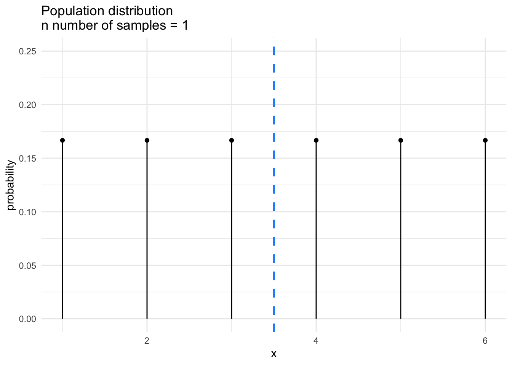

CONJ620: CM 4.2
Sampling Distributions
Alison Presmanes Hill
library(tidyverse)Introduction
If you want to knit this .Rmd file, you'll need to load the tidyverse package.
Let’s perform the following random experiment:
- Toss a fair 6-sided die \(N\) times;
- The population of interest is the set of all rolls. Since there is no limit to the number of times you can roll a die, \(N\) is potentially infinite;
- A sample is a set of \(n\) rolls;
- For every roll in each sample, observe the number of dots (“pips”) showing as \(x_i\);
- For each sample, calculate the mean number of dots observed across the \(n\) rolls:
\[ \bar{x} = \sum_{i=1}^n \frac{x_i}{n}\]
Let's start with 1 roll..
The Population Distribution
...where the number of rolls n = 1
First, let's create a data frame that defines our sample space. Remember, our sample space is about what is possible, not probable. The variables here are:
- x = number of pips on our n = 1 die
(omega_n1 <- tibble(x = 1:6))# A tibble: 6 x 1
x
<int>
1 1
2 2
3 3
4 4
5 5
6 6There are 6 possible discrete outcomes {1,2,3,4,5,6}. Now, let's move on to thinking about what is probable, given that we have defined what is possible. The group_by here is not totally necessary, as each value of x only occurs once, but this syntax will be useful in the future to you...
x_probs_n1 <- omega_n1 %>%
group_by(x) %>%
summarise(count = n(),
p_i = count/6) # equally probable, right?
x_probs_n1# A tibble: 6 x 3
x count p_i
<int> <int> <dbl>
1 1 1 0.167
2 2 1 0.167
3 3 1 0.167
4 4 1 0.167
5 5 1 0.167
6 6 1 0.167Sanity check: do all the probabilities sum to 1?
x_probs_n1 %>%
summarise(sum_of_ps = sum(p_i))# A tibble: 1 x 1
sum_of_ps
<dbl>
1 1That's it! This is the population distribution, which is the same as the sampling distribution of sample means (\(\bar{x}\)) for one dice roll. What does it look like? Let's plot it.
n1_plot <- ggplot(x_probs_n1, aes(x = x, y = p_i)) +
geom_point() +
geom_segment(aes(x = x, xend = x, y = p_i, yend = 0)) +
coord_cartesian(ylim = c(0, .25)) +
scale_y_continuous(name = "probability") +
scale_x_continuous(name = "x") +
ggtitle("Population distribution\nn number of samples = 1") +
geom_vline(xintercept = 3.5, col = "dodgerblue", lwd = 1, lty = "dashed")
n1_plot
I've also added a blue line here to denote the population mean. There are 6 possible discrete outcomes {1,2,3,4,5,6}, each of which is equally likely, therefore the mean population outcome is \(\mu\) = 3.5. Formally, the formula for the population mean is:
\[{\displaystyle \mu =\sum _{i=0}^{n}x_{i}p_{i}}\]
x_probs_n1 %>%
summarize(e_xbar = sum(x * p_i))# A tibble: 1 x 1
e_xbar
<dbl>
1 3.5Our First Sampling Distribution: 2 rolls
...where the number of rolls n = 2
First, let's create a data frame that defines our sample space. Remember, our sample space is about what is possible, not probable. The variables here are:
- x = number of pips on our n = 2 die rolls
(omega_n2 <- crossing(roll1 = x, roll2 = x))# A tibble: 36 x 2
roll1 roll2
<int> <int>
1 1 1
2 1 2
3 1 3
4 1 4
5 1 5
6 1 6
7 2 1
8 2 2
9 2 3
10 2 4
# ... with 26 more rowsHow many different possible combinations of pips from die1 and die2 are possible?
omega_n2 %>%
tally()# A tibble: 1 x 1
n
<int>
1 36Given that we know our random variable is a statistic- the mean number of pips across roll1 and roll2- what are the sample means of all possible samples in sample space? To answer, we can use the dplyr function mutate to create a new variable that is the mean number of pips for all possible combinations.
omega_n2 <- omega_n2 %>%
mutate(xbar_i = (roll1 + roll2)/2)
omega_n2# A tibble: 36 x 3
roll1 roll2 xbar_i
<int> <int> <dbl>
1 1 1 1
2 1 2 1.5
3 1 3 2
4 1 4 2.5
5 1 5 3
6 1 6 3.5
7 2 1 1.5
8 2 2 2
9 2 3 2.5
10 2 4 3
# ... with 26 more rowsQuestion 3: How many unique sample means are possible? To answer, we can use dplyr::distinct.
omega_n2 %>%
select(xbar_i) %>%
distinct()# A tibble: 11 x 1
xbar_i
<dbl>
1 1
2 1.5
3 2
4 2.5
5 3
6 3.5
7 4
8 4.5
9 5
10 5.5
11 6 Now, we are ready to consider probabilities, and we want the probabilities for each distinct sample mean.
xbar_probs_n2 <- omega_n2 %>%
group_by(xbar_i) %>%
summarise(count = n(), # number of rows
p_i = count/36) %>% # again, equally probable, right??
arrange(xbar_i)
xbar_probs_n2# A tibble: 11 x 3
xbar_i count p_i
<dbl> <int> <dbl>
1 1 1 0.0278
2 1.5 2 0.0556
3 2 3 0.0833
4 2.5 4 0.111
5 3 5 0.139
6 3.5 6 0.167
7 4 5 0.139
8 4.5 4 0.111
9 5 3 0.0833
10 5.5 2 0.0556
11 6 1 0.0278Sanity check: do all the probabilities sum to 1?
xbar_probs_n2 %>%
summarise(sum_of_ps = sum(p_i))# A tibble: 1 x 1
sum_of_ps
<dbl>
1 1Finally, let's calculate the expected value of the sample mean! That is,
\(E(\bar{x}) = \sum{\bar{x_i}p_i}\)
xbar_samp_n2 <- xbar_probs_n2 %>%
mutate(e_x_i = xbar_i * p_i)
xbar_samp_n2# A tibble: 11 x 4
xbar_i count p_i e_x_i
<dbl> <int> <dbl> <dbl>
1 1 1 0.0278 0.0278
2 1.5 2 0.0556 0.0833
3 2 3 0.0833 0.167
4 2.5 4 0.111 0.278
5 3 5 0.139 0.417
6 3.5 6 0.167 0.583
7 4 5 0.139 0.556
8 4.5 4 0.111 0.5
9 5 3 0.0833 0.417
10 5.5 2 0.0556 0.306
11 6 1 0.0278 0.167 xbar_samp_n2 %>%
summarise(e_xbar = sum(e_x_i))# A tibble: 1 x 1
e_xbar
<dbl>
1 3.5We can plot the sampling distribution of the sample means for \(n\) = 2 rolls, with the population mean:
n2_plot <- ggplot(xbar_probs_n2, aes(x = xbar_i, y = p_i)) +
geom_point() +
geom_segment(aes(x = xbar_i, xend = xbar_i, y = p_i, yend = 0)) +
coord_cartesian(ylim = c(0, .25)) +
scale_y_continuous(name = "probability") +
scale_x_continuous(name = "xbar_i") +
ggtitle("Sampling distribution\nn number of rolls = 2") +
geom_vline(xintercept = 3.5, col = "dodgerblue", lwd = 1, lty = "dashed")
n2_plot
Our Second Sampling Distribution: 3 rolls
- Make a data frame that defines your sample space using
purrr::crossing()(this package is loaded with thetidyverse). Usingdplyr, how many different possible combinations of pips from roll1, roll2, and roll3 are possible? - Calculate the mean number of pips for each possible combination. These are your \(\bar{x_i}\) values. How many unique values of \(\bar{x_i}\) are possible?
- Calculate the probabilities for each distinct sample mean, so your \(p_i\) values.
- Calculate the expected value of the sample mean! That is, the value of \(E(\bar{x}) = \sum{\bar{x_i}p_i}\).
- Care to hazard a guess as to the expected value of the sample mean for 4 die?
- It turns out that the distribution of one die roll follows a uniform distribution, which is obviously quite different looking from a "normal" bell-shaped distribution. The question is: what is the sampling distribution of the sample mean for a uniformly distributed variable? Use the following code to simulate 10 experiments where a die is rolled 10 times and we take the mean pips for each experiment.
set.seed(12345)
unif_means_ten <- numeric(10) # space for big results (vector of Os)
for (i in 1:10){
x <- runif(10, min = 1, max = 6) # draw random sample with 3 observations each
unif_means_ten[i] <- mean(x) # compute mean for each ith sample
}
my_sim <- unif_means_ten %>% tibble(sample_mean = .)What is the mean of the sample means? What is the standard error of the mean? (it is just the sd() of the sampling distribution of the sample means)
mm <- mean(unif_means_ten) # mean of the sampling distribution of means
sem <- sd(unif_means_ten) # sem- Use the code above to run this simulation for 100,000 experiments, and make a plot of the sampling distribution of the sample means. What do you see?
ggplot(my_sim, aes(x = sample_mean)) +
geom_density(color = "dodgerblue") +
stat_function(fun = dnorm, args = list(mean = mm, sd = sem), color = "red")